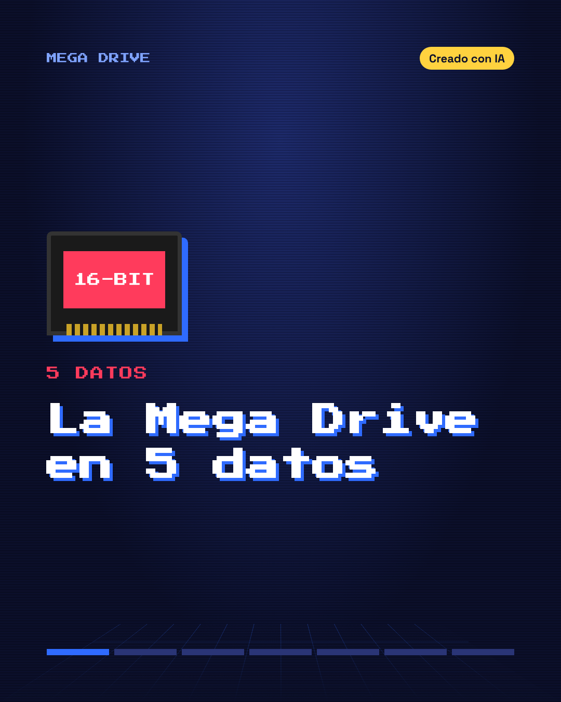
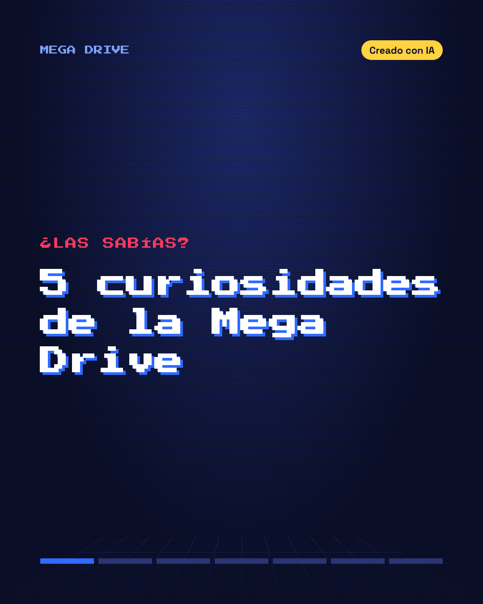
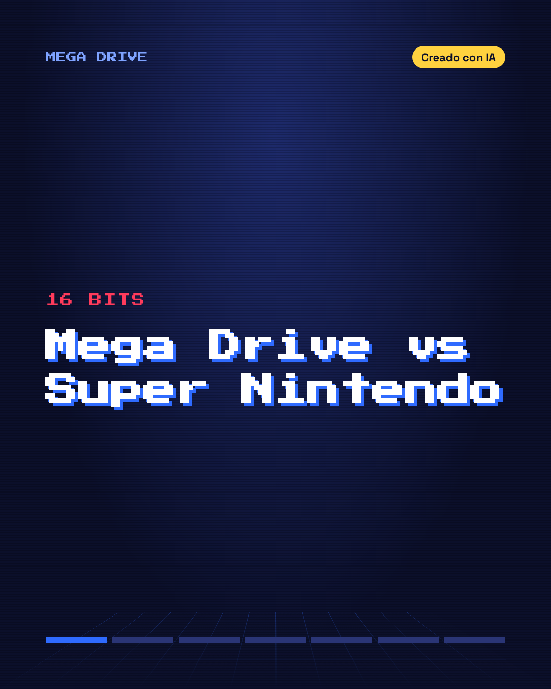

RETRO
16 BITS
16 BITS
Videojuegos retro. Empezamos por la Mega Drive.
Creado con IA Instagram TikTok FacebookÚLTIMOS POSTS



Videojuegos retro. Empezamos por la Mega Drive.
Creado con IA Instagram TikTok Facebook

